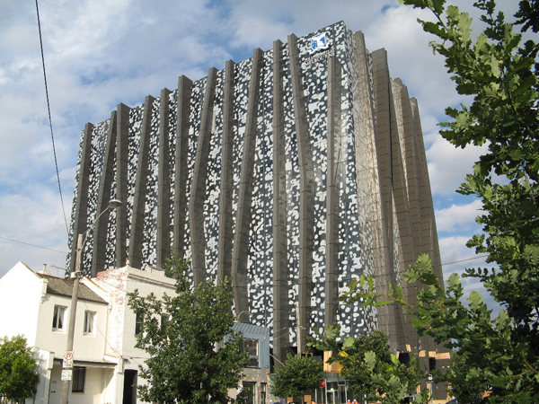

Location
ADCS 2010 will be held at the University of Melbourne in "The Spot", 198 Berkeley St, Carlton.
Talks will be in room 001.020, with posters on display in the adjacent breakout area 001.022.
View Larger Map
If you see a building with a lot of spots on it, you're at the right place!
